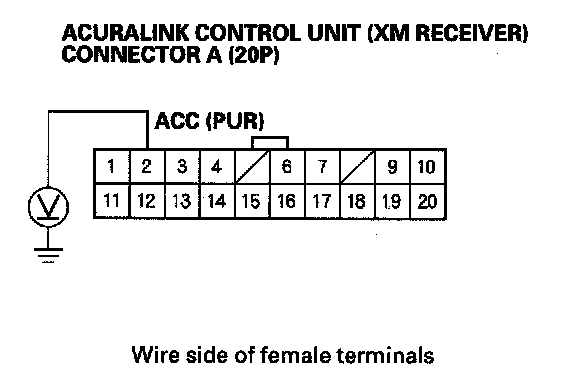
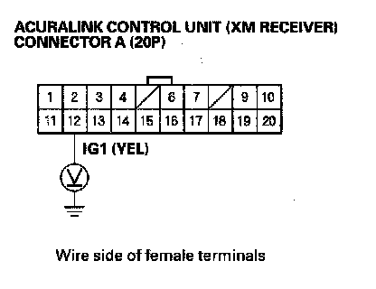
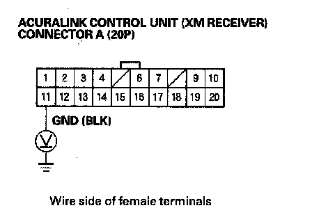

AcuraLink Service Application Does Not Work
AcuraLink service application does not workNOTE: In order for the AcuraLink service to work, the client must have an activated account with XM (receives all channels).
1. Check the No.21 (7.5 A) fuse and No. 32 (10 A) fuse in the under-dash fuse/relay box.
Are the fuses OK?
YES - Go to step 2.
NO - Replace the fuse(s), and recheck.
2. Turn the ignition switch to ACC (I).

3. Measure the voltage between the No. 2 terminal of the AcuraLink control unit (XM receiver) connector A (20P) and body ground.
Is there battery voltage?
YES - Go to step 4.
NO - Repair open in the wire(s) between the AcuraLink control unit and the No. 32 (10 A) fuse in the under-dash fuse/relay box.
4. Turn the ignition switch ON (II).

5. Measure the voltage between the No. 12 terminal of the AcuraLink control unit (XM receiver) connector A (20P) and body ground.
Is there battery voltage?
YES - Go to step 6.
NO - Repair open in the wire(s) between the AcuraLink control unit (XM receiver) and the No. 21 (7.5 A) fuse in the under-dash fuse/relay box.
6. Turn the ignition switch OFF.

7. Measure the voltage between the No. 11 terminal of the AcuraLink control unit (XM receiver) connector A (20P) and body ground.
Is there less than 0.5 V?
YES - Check for loose wires or poor connections at the AcuraLink control unit (XM receiver) connector A (20P). If the connections are good, substitute a known-good AcuraLink control unit (XM receiver), and recheck. If the symptom goes away, replace the original AcuraLink control unit(XM receiver).
NO - Check for an open in the wire between the AcuraLink control unit (XM receiver) and body ground. If the wire is OK, check for poor ground at G606.